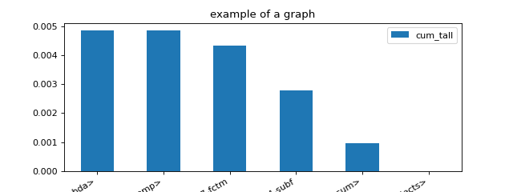

monitoring#
Measuring Computing Time#
measure_time#
- onnxrt_backend_dev.monitoring.benchmark.measure_time(stmt: str | Callable, context: Dict[str, Any] | None = None, repeat: int = 10, number: int = 50, warmup: int = 1, div_by_number: bool = True, max_time: float | None = None) Dict[str, str | int | float][source]#
Measures a statement and returns the results as a dictionary.
- Parameters:
stmt – string or callable
context – variable to know in a dictionary
repeat – average over repeat experiment
number – number of executions in one row
warmup – number of iteration to do before starting the real measurement
div_by_number – divide by the number of executions
max_time – execute the statement until the total goes beyond this time (approximatively), repeat is ignored, div_by_number must be set to True
- Returns:
dictionary
<<<
from pprint import pprint from math import cos from onnxrt_backend_dev.monitoring.benchmark import measure_time res = measure_time(lambda: cos(0.5)) pprint(res)
>>>
{'average': 9.11999986783485e-08, 'context_size': 64, 'deviation': 2.56125002230228e-09, 'max_exec': 9.800000043469481e-08, 'min_exec': 8.799999704933726e-08, 'number': 50, 'repeat': 10, 'ttime': 9.11999986783485e-07, 'warmup_time': 9.40000018090359e-06}
See Timer.repeat for a better understanding of parameter repeat and number. The function returns a duration corresponding to number times the execution of the main statement.
Monitoring Memory#
start_spying_on#
- onnxrt_backend_dev.monitoring.memory_peak.start_spying_on(pid: int | None = None, delay: float = 0.01, cuda: bool = False) MemorySpy[source]#
Starts the memory spy. The function starts another process spying on the one sent as an argument.
- Parameters:
pid – process id to spy or the the current one.
delay – delay between two measures.
cuda – True or False to get memory for cuda devices
Example:
.. code-block:: python
from onnxrt_backend_dev.monitoring.memory_peak import start_spying_on
p = start_spying_on() # … # code to measure # … stat = p.stop() print(stat)
MemorySpy#
- class onnxrt_backend_dev.monitoring.memory_peak.MemorySpy(pid: int, delay: float = 0.01, cuda: bool = False)[source]#
Information about the spy. It class method start. Method stop can be called to end the measure.
- Parameters:
pid – process id of the process to spy on
delay – spy on every delay seconds
cuda – enable cuda monitoring
Monitor#
Profiling#
ProfileNode#
- class onnxrt_backend_dev.monitoring.profiling.ProfileNode(filename: str, line: int, func_name: str, nc1: int, nc2: int, tin: float, tall: float)[source]#
Graph structure to represent a profiling.
- Parameters:
filename – filename
line – line number
func_name – function name
nc1 – number of calls 1
nc2 – number of calls 2
tin – time spent in the function
tout – time spent in the function and in the sub functions
- add_called_by(pnode: ProfileNode)[source]#
This function is called by these lines.
- add_calls_to(pnode: ProfileNode, time_elements)[source]#
This function calls this node.
- as_dict(filter_node=None, sort_key=SortKey.LINE)[source]#
Renders the results of a profiling interpreted with function @fn profile2graph. It can then be loaded with a dataframe.
- Parameters:
filter_node – display only the nodes for which this function returns True, if None, the default function removes built-in function with small impact
sort_key – sort sub nodes by…
- Returns:
rows
- static filter_node_(node, info=None) bool[source]#
Filters out node to be displayed by default.
- Parameters:
node – node
info – if the node is called by a function, this dictionary can be used to overwrite the attributes held by the node
- Returns:
boolean (True to keep, False to forget)
- property key#
Returns file:line.
- to_json(filter_node=None, sort_key=SortKey.LINE, as_str=True, **kwargs) str | Dict[str, Any][source]#
Renders the results of a profiling interpreted with function @fn profile2graph as JSON.
- Parameters:
filter_node – display only the nodes for which this function returns True, if None, the default function removes built-in function with small impact
sort_key – sort sub nodes by…
as_str – converts the json into a string
kwargs – see
json.dumps()
- Returns:
rows
- to_text(filter_node=None, sort_key=SortKey.LINE, fct_width=60) str[source]#
Prints the profiling to text.
- Parameters:
filter_node – display only the nodes for which this function returns True, if None, the default function removes built-in function with small impact
sort_key – sort sub nodes by…
- Returns:
rows
profile#
- onnxrt_backend_dev.monitoring.profiling.profile(fct: Callable, sort: str = 'cumulative', rootrem: str | None = None, as_df: bool = False, return_results: bool = False, **kwargs) Tuple[Stats, Any] | Tuple[Stats, Any, Any][source]#
Profiles the execution of a function.
- Parameters:
fct – function to profile
sort – see sort_stats
rootrem – root to remove in filenames
as_df – return the results as a dataframe and not text
return_results – if True, return results as well (in the first position)
kwargs – additional parameters used to create the profiler, see cProfile.Profile
- Returns:
raw results, statistics text dump (or dataframe is as_df is True)
(
Source code,png,hires.png,pdf)
{kind=link}
{kind=link}
profile2graph#
- onnxrt_backend_dev.monitoring.profiling.profile2graph(ps: Stats, clean_text: Callable | None = None, verbose: bool = False) Tuple[Any, Dict[Any, ProfileNode]][source]#
Converts profiling statistics into a graphs.
- Parameters:
ps – an instance of pstats
clean_text – function to clean function names
verbose – verbosity
- Returns:
an instance of
ProfileNode
pyinstrument has a nice display to show time spent and call stack at the same time. This function tries to replicate that display based on the results produced by module
cProfile. Here is an example.<<<
import time from onnxrt_backend_dev.monitoring.profiling import profile, profile2graph def fct0(t): time.sleep(t) def fct1(t): time.sleep(t) def fct2(): fct1(0.1) fct1(0.01) def fct3(): fct0(0.2) fct1(0.5) def fct4(): fct2() fct3() ps = profile(fct4)[0] root, nodes = profile2graph(ps, clean_text=lambda x: x.split("/")[-1]) text = root.to_text() print(text)
>>>
fct1 -- 3 3 -- 0.00004 0.61213 -- :11:fct1 (fct1) <built-in method time.sleep> -- 3 3 -- 0.61209 0.61209 -- ~:0:<built-in method time.sleep> (<built-in method time.sleep>) +++ fct4 -- 1 1 -- 0.00001 0.81307 -- :25:fct4 (fct4) fct2 -- 1 1 -- 0.00001 0.11089 -- :15:fct2 (fct2) fct1 -- 2 2 -- 0.00001 0.11089 -- :11:fct1 (fct1) +++ fct3 -- 1 1 -- 0.00003 0.70216 -- :20:fct3 (fct3) fct0 -- 1 1 -- 0.00001 0.20089 -- :7:fct0 (fct0) <built-in method time.sleep> -- 1 1 -- 0.20087 0.20087 -- ~:0:<built-in method time.sleep> (<built-in method time.sleep>) +++ fct1 -- 1 1 -- 0.00002 0.50125 -- :11:fct1 (fct1) +++ <built-in method time.sleep> -- 4 4 -- 0.81297 0.81297 -- ~:0:<built-in method time.sleep> (<built-in method time.sleep>)